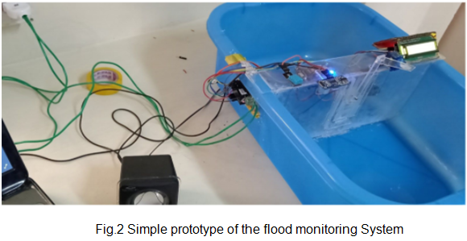
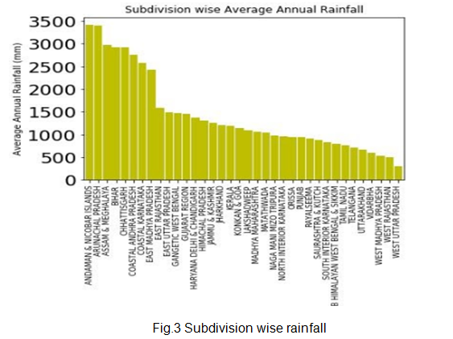
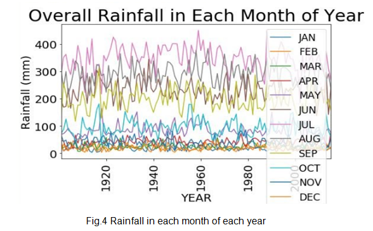
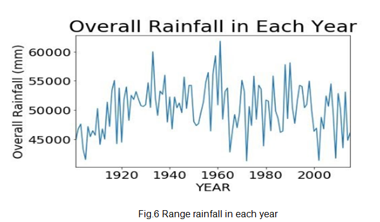
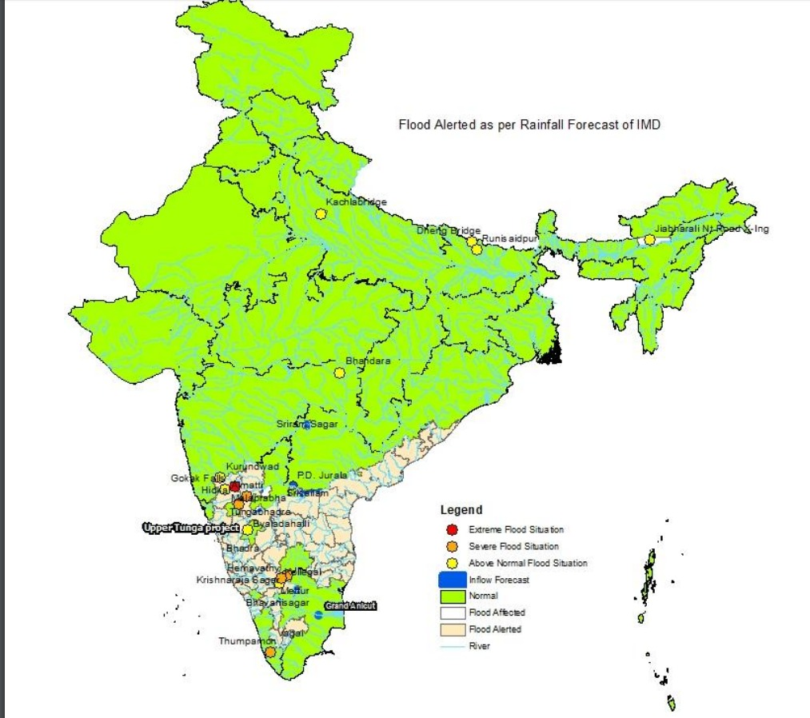

Results
Prototype

Fig 2. Consist of Node Mcu, Digital output for displaying the humidity, speaker for the siren, ultrasonic sensor. The threshold limit set is 7mm so whenever it reaches the limit the gates will open and siren occurs.
Rainfall Prediction

The algorithm used here is bar plot using Matplotlib library to the subdivision wise average rainfall vs. subdivision wise states. The above graph defines the maximum amount of rainfall that occurs always in Andaman Nicobar Islands, Assam, and Meghalaya, Arunachal Pradesh, Bihar, Chhattisgarh. The minimum amount of rainfall occurs in Uttar Pradesh, Rajasthan, Madhya Pradesh, and Uttarakhand.

Scatter plot is being used to find the rainfall in each month of each year, using the matplot library it is found that the amount of Rainfall was increased every year in July.

By analyzing the Rainfall data the amount of rainfall in each state with respective months was plotted. In every state of India the maximum amount of rainfall occurred in the month of July. More amount of Rainfall was in Arunachal Pradesh, Karnataka, Madhya Pradesh, and less amount of rainfall in the states of Bihar, Punjab, and Odisha.

Using pyplot library we can easily analyze that the rate of rainfall was increased in the year of 1961. Rainfall rate was increasing rapidly compared to last few years from these Data Analysis reports. The average amount of rainfall was in the range of 50000 to 55000, the graph represents the overall rainfall analysis each year.
In the existing system the authors have used the parameters based on the drainage system which may lead to some errors and some have connected to the Bluetooth so the message passing to the people becomes difficult. In this article the parameters are taken using the rainfall and predict the accurate rainfall at a place of the country and sending the alert information through the website dashboard stating the gates are being opened

Conclusion
In recent times, India has faced many natural disasters. Due to the floods, it causes heavy damages to properties, wild life’s and huge loss of human lives. This problem can be overcome by a proper flood monitoring system integrated with Machine Learning and IoT. The proposed system can be used for better monitoring of water levels in dams. If the flood occurs, it easily communicates the information to the nearby people. The implemented communication systems and transmission technologies are more efficient and can easily adapt to the background technologies. The proposed methodology has increased efficiency and accuracy for the prediction of floods, and even it gives good efficiency at critical conditions. Overall this proposed system would be advantageous for the people to get enough time to evacuate from the flood-prone areas before the flood occurs.